5. Viaje por Extremadura
5. Viaje por Extremadura
1 a 4 de octubre de 2021
Día 2 Montánchez a Trujillo
2 de octubre de 2021
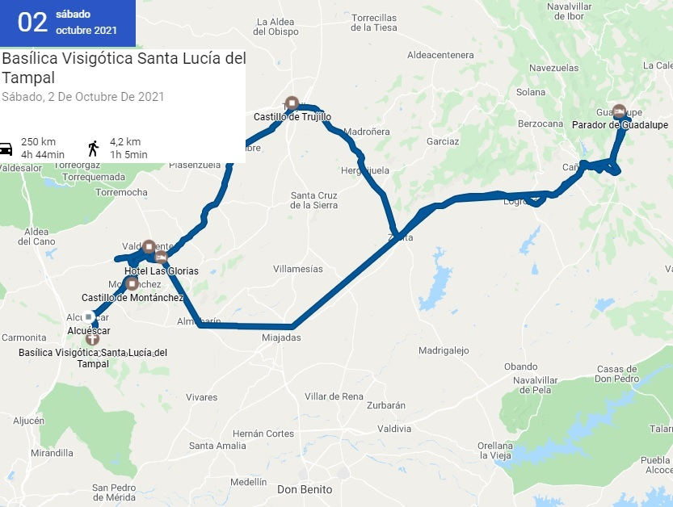


82. Montánchez
82. Montánchez
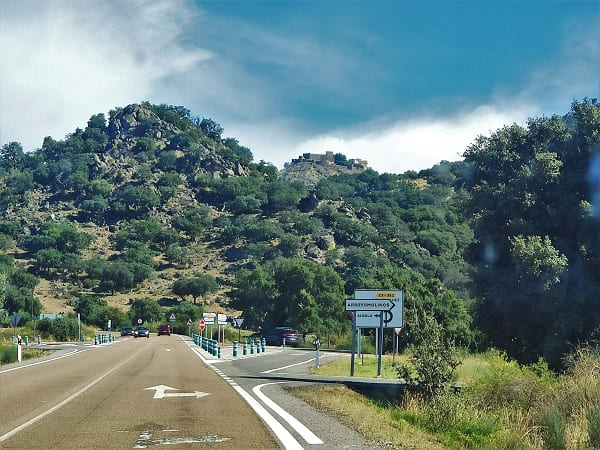
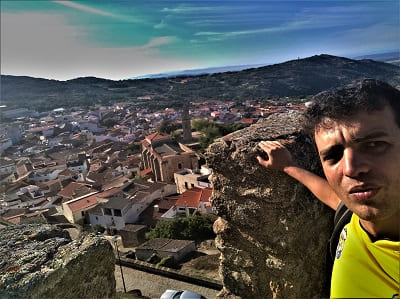
El primer punto a visitar de la mañana el pueblo de Montánchez. Este pueblo es importante debido a que la orden de Santiago tras la reconquista se asentó en el lugar. El único pueblo extremeño donde estaba esta orden. Desde el castillo que era de origen romano se hicieron bastantes incursiones a los árabes acabando por recuperar todo el territorio de la actual Extremadura.
Desde la reconquista hasta mediados del siglo XVII, el castillo funcionaría como residencia de gente noble y como cárcel.
Hoy en día el castillo de Montánchez es completamente visitable y se ubica en lo alto del pueblo. Dentro del castillo se tiene pensado habilitar la torre del Homenaje para hacer un museo y dar ingresos al pueblo, porque actualmente no hay puerta en el recinto y visitarlo es gratis.
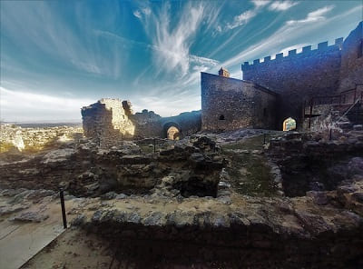
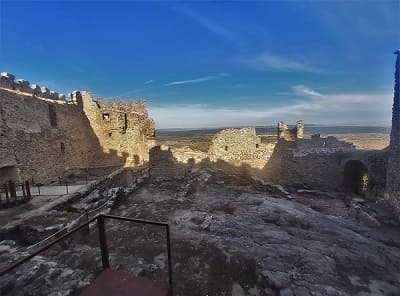
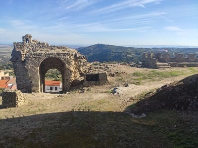
El pueblo es bastante común a otros pueblos de la zona, con una iglesia, la de san Mateo bastante antigua, originalmente del siglo XIV pero totalmente restaurada en el siglo XVIII casi.
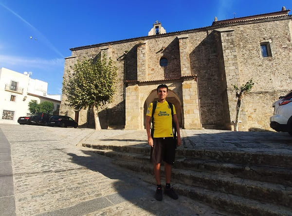
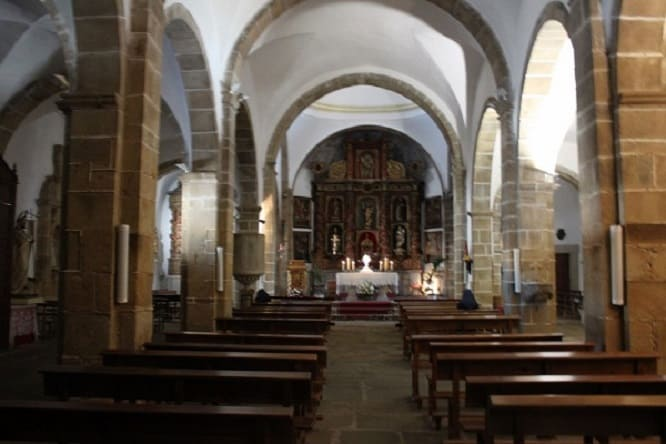


83. Alcuéscar
83. Alcuéscar
El segundo pueblo,
Alcuéscar, es algo más grande que el anterior. Sin embargo, siglos atrás, Montánchez era cabeza de la región y la orden de Santiago tenía una pequeña sede en este pueblo.
El pueblo gano importancia a partir del siglo XVI y en el hay varias casas de grandes familias a modo de casa nobiliaria.
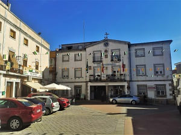
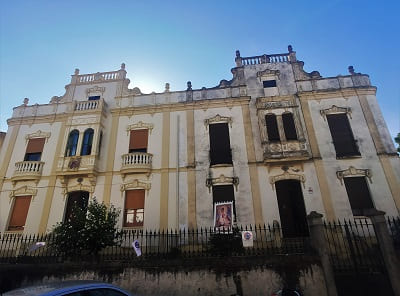
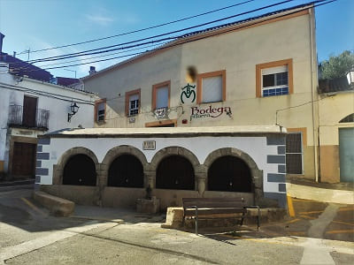
Como edificios religiosos esta la iglesia de la Asunción, del siglo XV y finalizada en el siglo XVII. Cuando fui eran la fiesta de la virgen y la tenían engalanada con el traje típico extremeño. Cuenta con 7 ermitas y una plaza Mayor que no tiene nada de especial. Es más grande que la de Montánchez y de estilo gótico y barroco.
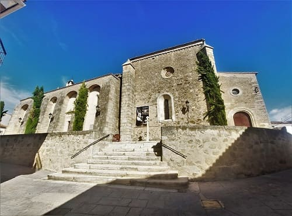
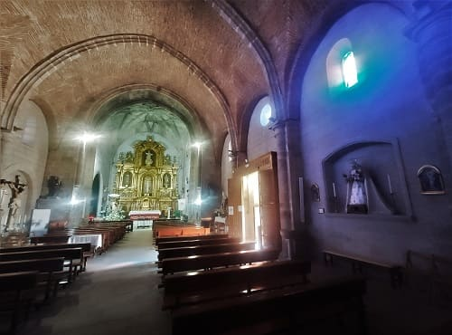
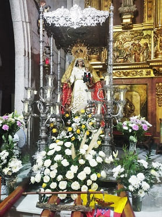
Pero lo que más destaca es por tener a sólo 3 kilómetros del pueblo la
iglesia de Santa Lucía del Trampal. Una de las pocas iglesias en toda España en pie de la época visigótica. Es mezcla entre visigótica y mozárabe y debido a que estaba oculta en la maleza durante siglos, ha sido conservada en muy buen estado. Fue descubierta por un expoliador que andaba buscando restos de la guerra de la independencia francesa y se encontró con esta construcción. Entonces ante el aviso al pueblo sería limpiada toda la zona y realizados los primeros trabajos arqueológicos. Todos los restos de esta iglesia se encuentran en el museo arqueológico de Cáceres. Si bien han edificado un edificio para dar cabida a un guarda y realizar una explicación del edificio así como una proyección visual.
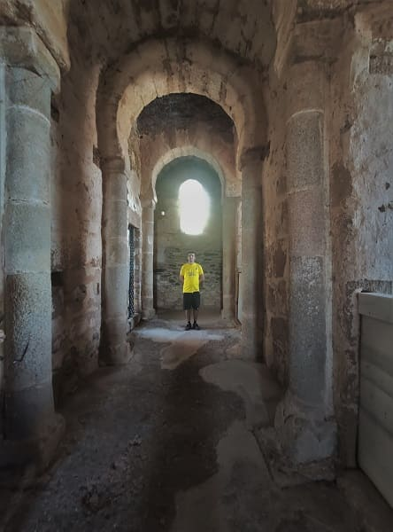
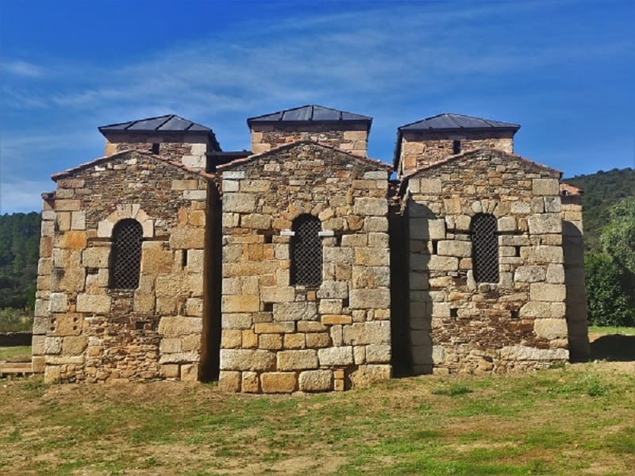
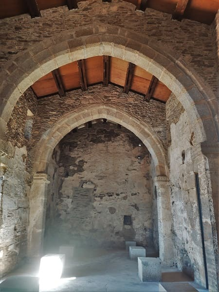


84. Valdefuentes
84. Valdefuentes
Después de ver estos dos pueblos vería
Valdefuentes, muy cerquita del hotel donde me aloje, que esta a apenas 30kms de Cáceres. Este pueblo cuenta con una plaza muy amplia y un par de iglesias.
La iglesia de Nuestra Señora de la Virgen de Bienvenida es del siglo XVII, de estilo barroco y muy grande. En la foto.
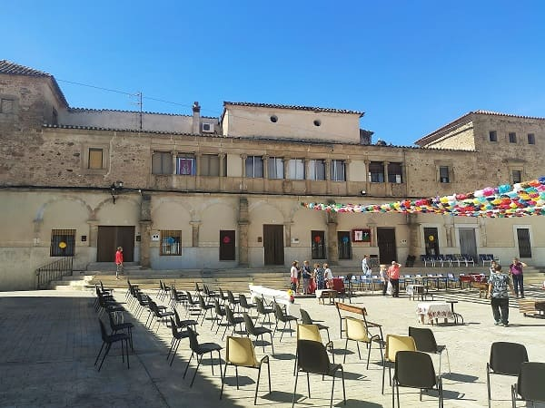
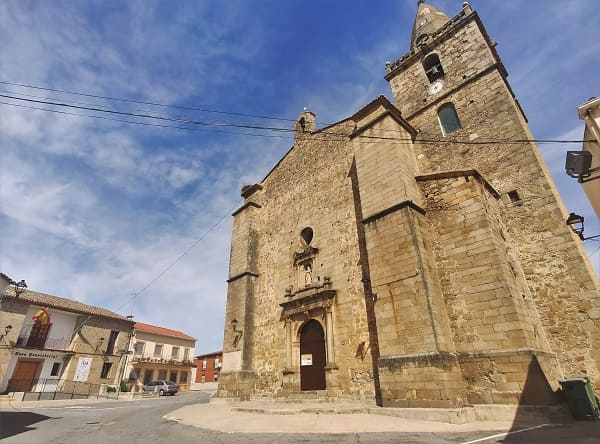
También tiene
un convento, el de san Agustín, en la que la familia Sande haría un panteón de enterramiento de su familia. La iglesia del convento es del siglo XVIII y tiene un claustro en su interior.
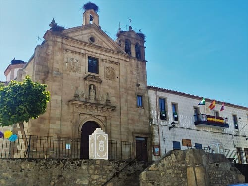
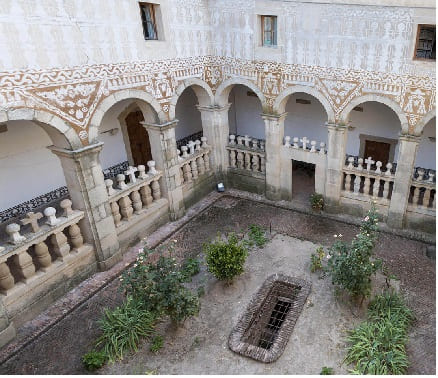
Lo que de verdad destaca es
el palacio de los Sande que consta de dos plantas, la baja se abre en pórtico arqueado (actualmente macizado) y la superior tiene una galería arquitrabada con gráciles columnas renacentistas. En la plaza el rollo jurisdiccional adornado porque estuve en el día de la Virgen.
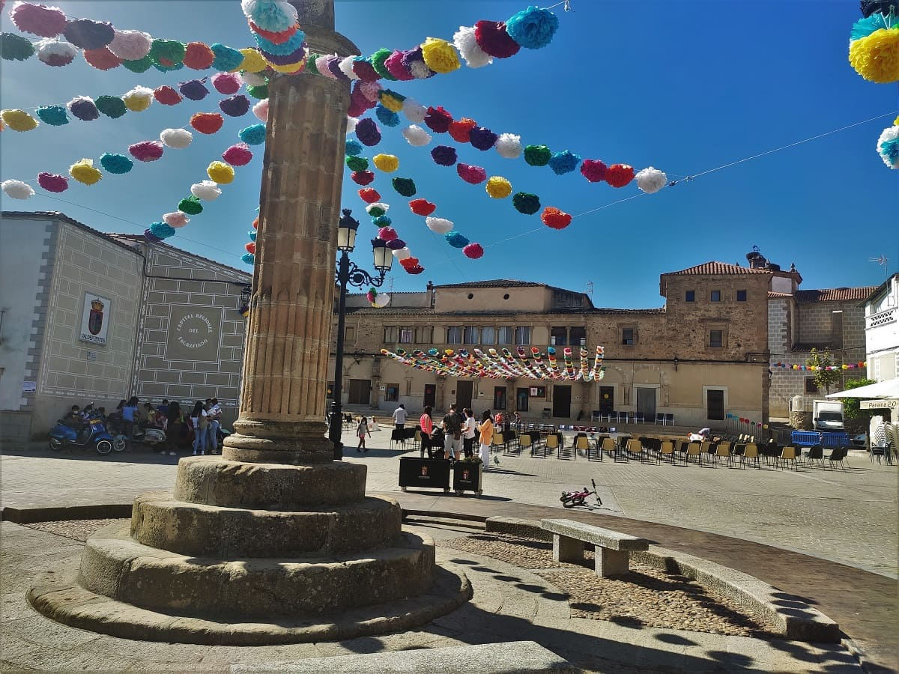


85. Guadalupe
85. Guadalupe
Por la tarde después de comer fui a ver
Guadalupe o la puebla de Guadalupe.
Esta ciudad es mundialmente conocida por
su monasterio y por su Virgen, que si bien lo había visitado cuando era un niño no me acordaba prácticamente de nada.
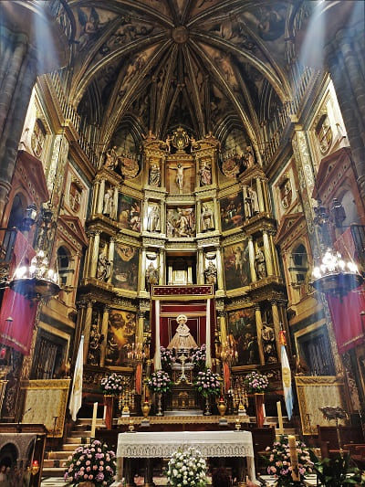
La imagen de la virgen se dice que viene de Palestina y que fue traída desde allí y colocada en Sevilla por el papa de aquel tiempo, pero cuando los moros invadieron la península los cristianos la esconderían.
Pruebas echas sobre la talla que se dice se le apareció a un pastor a finales del siglo XIII y se haría una ermita en el lugar de la aparición donde después Alfonso XI mandaría la construcción del monasterio debido a la suerte en las batallas que según el había sido obra de la Virgen.
Visitar la iglesia del Real Monasterio de Santa María es gratuita y la entrada cuesta 5 euros.
Merece mucho la pena entrar ya que te muestran salas que son auténticas joyas culturales, repletas de pinturas y de piedras preciosas.
Como partes más importantes la iglesia gótica del siglo XIV, con decoración barroca.
El retablo Mayor realizado en el siglo XVII, dorado y policromado con pinturas del hijo de El Greco.
El Camarín de la virgen del siglo XVIII.
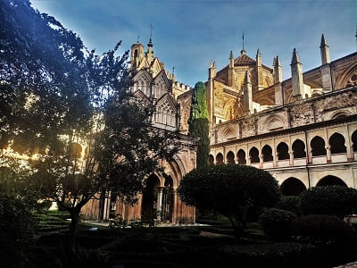
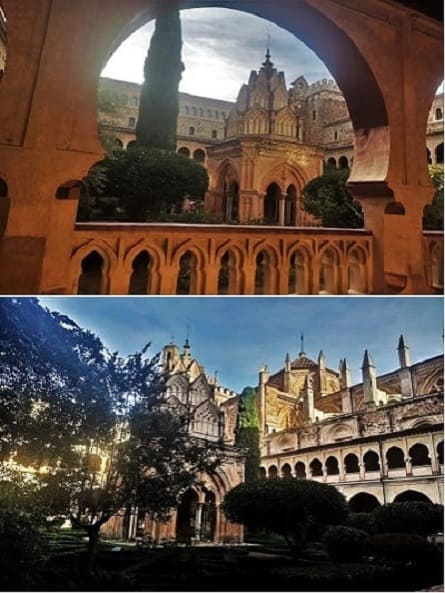
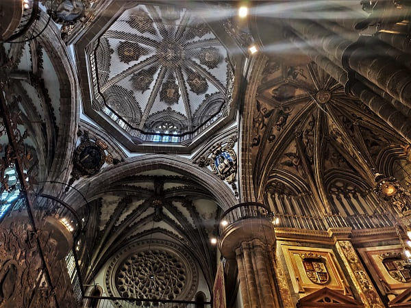
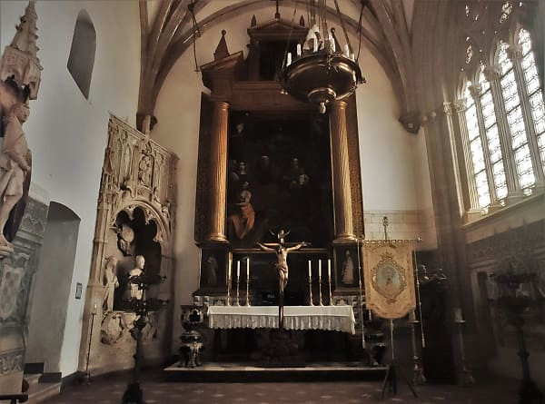
El claustro mudéjar de dos pisos y pequeño templete gótico mudéjar de ladrillo revestido de azulejos de Manises.
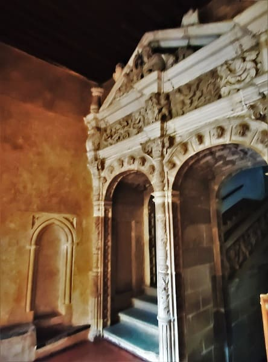
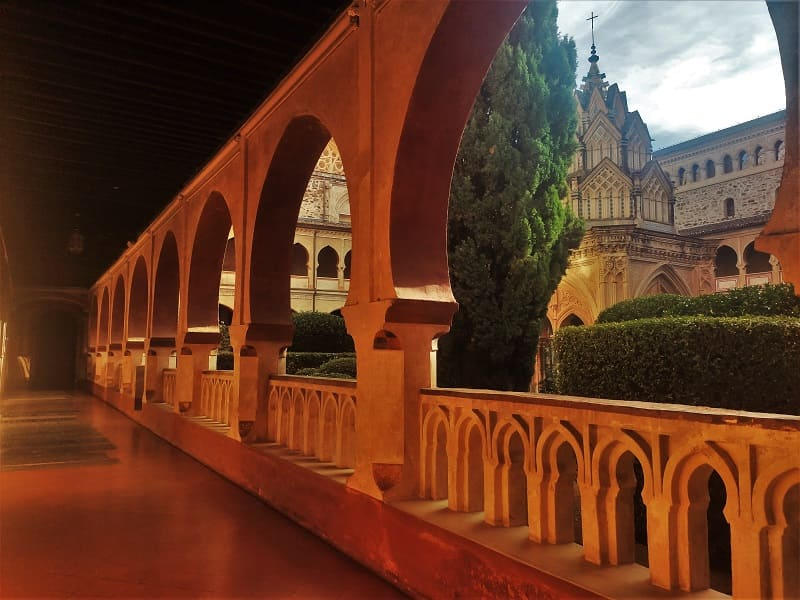
La sala Capitular del siglo XV con importantes pinturas góticas al fresco.
El
claustro gótico que fue antigua botica y hospital. El claustro es uno de los más grandes de España teniendo un amplio jardín y es que este monasterio llego a albergar la vida de 400 frailes.
La sacristía y capilla de San Jerónimo con pinturas de Zurbarán.
Los museos de pintura y escultura, con tesoro con frontales bordados y museo de grandes libros de coro miniados.
Y es que Guadalupe durante muchos años ha sido lugar de peregrinación a la virgen y se ha donado oro y joyas desde América.
El pueblo además guarda bastante homogeneidad en sus edificaciones, con un suelo empedrado y unas calles con multitud de arcos históricos. Entre ellos
la iglesia de la Santa Trinidad, edificio del siglo XVIII.
El colegio de Infantes, antiguo centro de enseñanza religioso del siglo XV.
Conjunto de hospitales para los peregrinos que venían al Monasterio, y una serie de arcos medievales en las puertas de entrada de la gran muralla de la que se conservan solo algunos trozos.
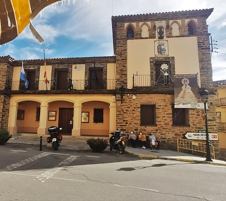
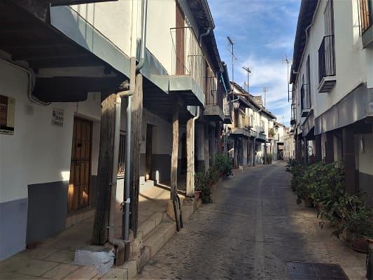
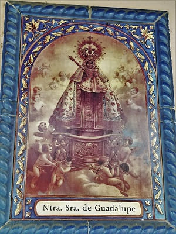

86. Trujillo
86. Trujillo
Después de ver el monasterio iría a
Trujillo, uno de los pueblos más bonitos y con más historia de Cáceres y me atrevería a decir de toda España. Es tal la densidad de monumentos por metro cuadrado, siendo palacios y edificios religiosos en su mayoría que ha sido elegida junto con Cáceres para rodar en ella la mega producción cinematográfica de Juego de Tronos y ha sido reelegida para rodar numerosas escenas de la nueva serie, la precuela de Juego de Tronos, serie compuesta de 10 temporadas, una de las más largas.
El pueblo era ya importante con los árabes, teniendo una de las más grandes fortificaciones en Extremadura después de la alcazaba de Badajoz. Pero no sería hasta el siglo XV y XVI cuando empezaría el apogeo de la ciudad proveniente de las partidas que venían desde América. El pueblo es famoso por ser ciudad natal de uno de los conquistadores más famosos Españoles, Francisco Pizarro que llevo a cabo la conquista de casi toda América del sur, desde Colombia hasta Perú. Muchos le seguirían en la exploración y conquista del Nuevo Mundo y muchos precisamente de la misma ciudad que él, donde fueron llenando la ciudad de bonitos palacios y de títulos nobiliarios nombrados por los Austrias Españoles.
Aparcaría en la avenida Ramón y Cajal, una de las arterias principales de la ciudad. Cerca
del convento de los Dominicos de la Encarnación, que data de finales del siglo XVI de estilo gótico y que se levanto sobre otro edificio.
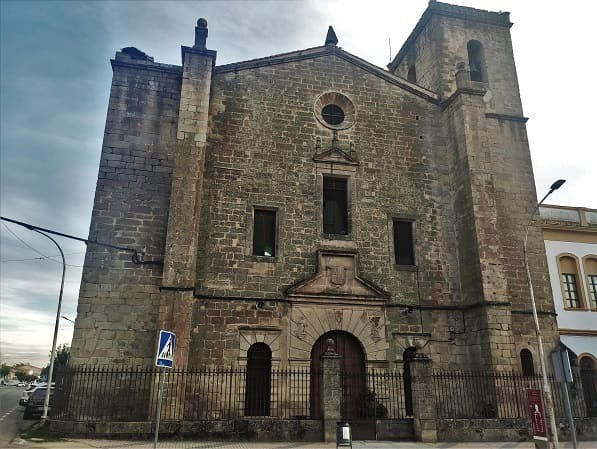
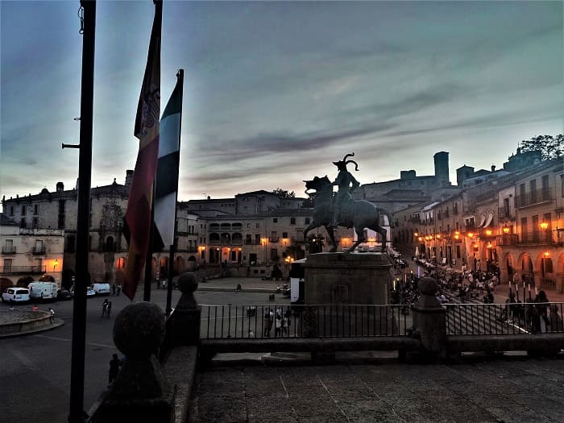
Muy cerca se encuentra
la plazuela de Juan Pizarro de Aragón y su palacio. Hoy en día funciona como centro cultural y también el palacio de Orellana. Ambos fueron conquistadores de las Américas en el siglo XVI.
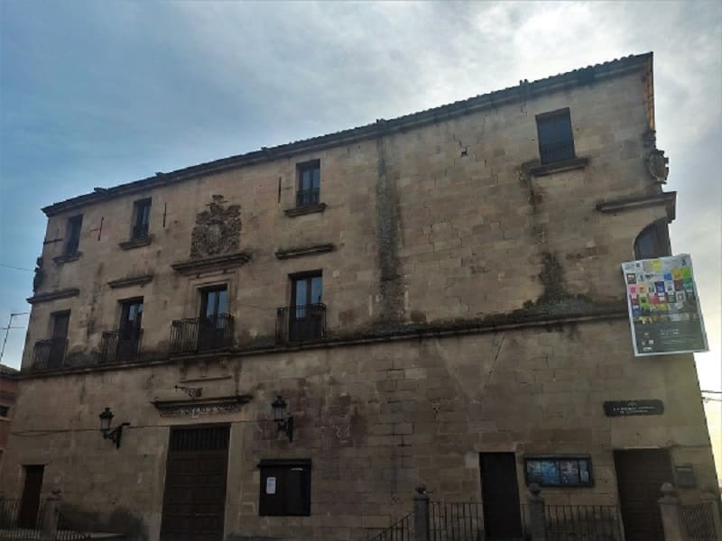
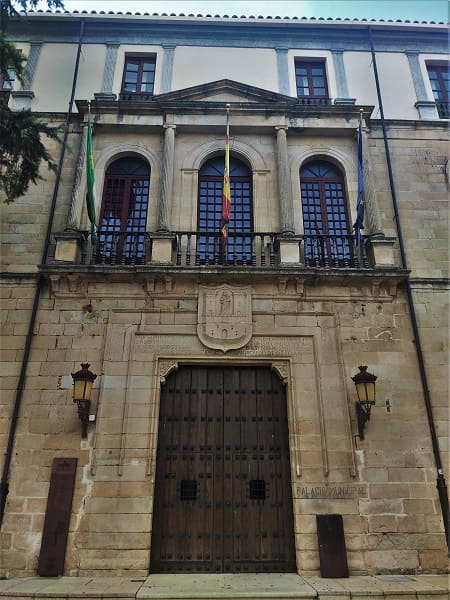
Después pasaría por
la iglesia de san Francisco, de antiguo convento de san Francisco, una de las más importantes de la ciudad. Data del siglo XVI y es de estilo gótico contando con los escudos de los nobles que patrocinaron su construcción.
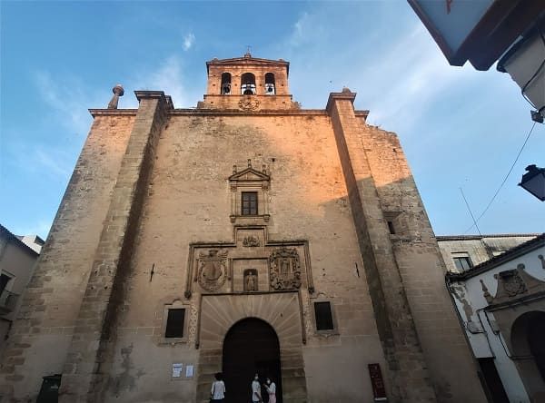
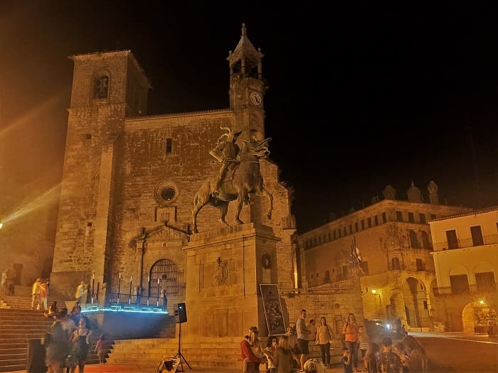
Después llegaría a
la plaza Mayor, centro neurálgico de la ciudad y punto más popular cuando se habla de Trujillo. En el está la estatuda de el conquistador Francisco Pizarro, que cuenta con un gran palacio en la plaza central y que junto a
la estatua a caballo es de las más fotografiadas de España.
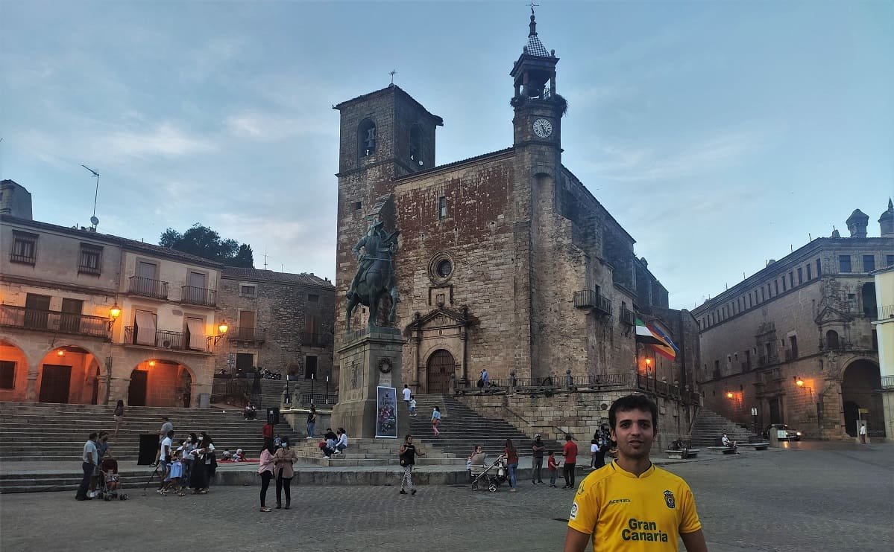
La plaza esta rodeada de palacios ya que muchos de sus hombres eran de Trujillo y además cuna de otros conquistadores.
El palacio de la Conquista el más visitado que cuenta con un gran escudo en la esquina del edificio y
el palacio de San Carlos. Ambos son del siglo XVI, y fueron terminados una vez fallecidos. El estilo de la portada del mismo es barroco del tipo churrigueresco.
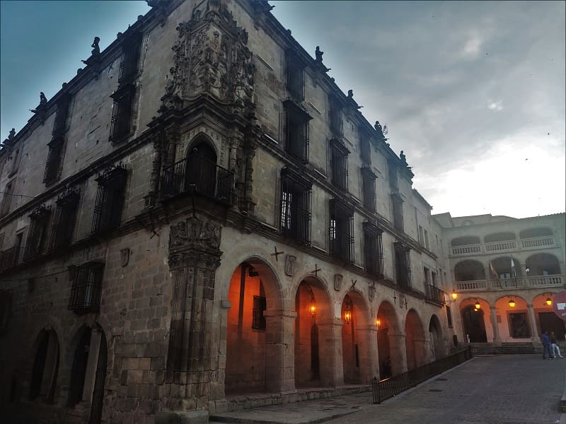
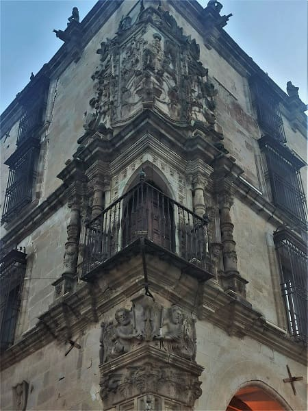
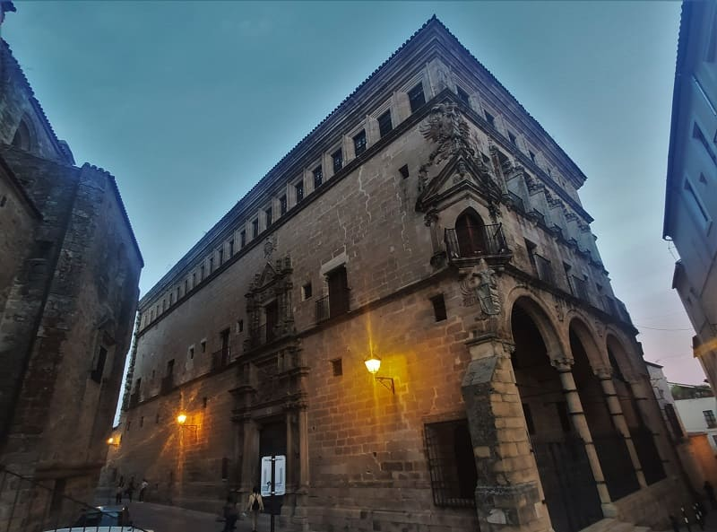
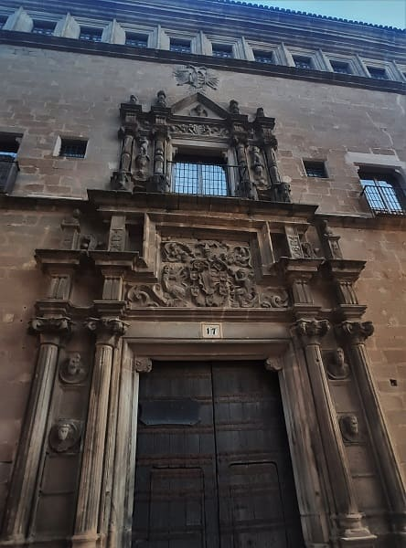
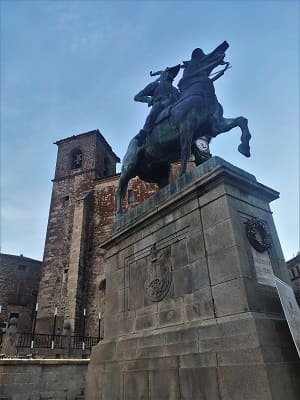
En la misma plaza se encuentra la
iglesia de San Martín, con origen del siglo XIV, iría sufriendo cambios, pasando del estilo gótico al renacentista tanto en su exterior como por dentro.
Siguiendo por la calle de camino a la alcazaba fui encontrando sitios tan emblemáticos como
la puerta de la sangre, situada entre
la iglesia de Santiago y la Casa Fuerte de Luis de Chaves, que están flanqueador torres muy altas. Este punto es escenario de varias escenas de la serie de Juego de Tronos. En la imagen derecha, la fachada de iglesia de Santiago.
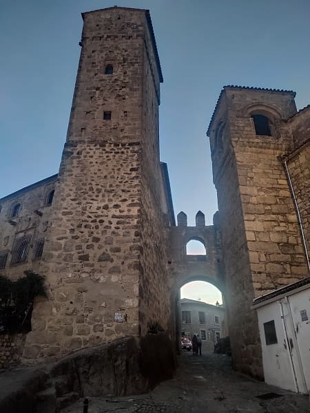
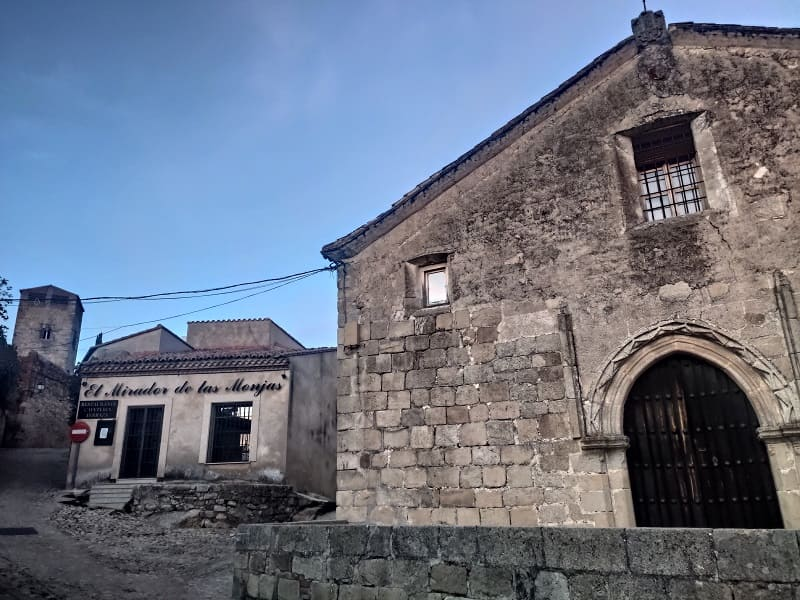
Otro de los edificios que me encontré, ya haciéndose de noche, era la iglesia más importante de la ciudad, que al estar oscuro no se ven claras diferencias pero si que es mucho más grande que las demás.
Esta iglesia es de las primeras de la ciudad, empezando su construcción en el siglo XIII apenas reconquistada la ciudad de los moriscos. En ella se ve influencia románica pero el estilo predominante es el gótico ya que sería reconstruida en el siglo XV y XVI.
Lo más importante de la iglesia es el retablo de estilo gótico. Consta de una serie de tablas con pinturas de estilo flamenco, una rareza en arte religioso en Extremadura.
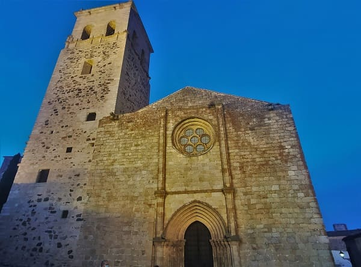
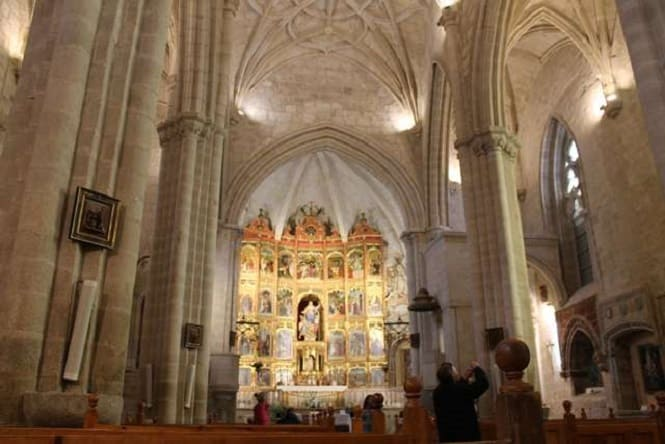
La estampa de las dos iglesias de noche es espectacular.

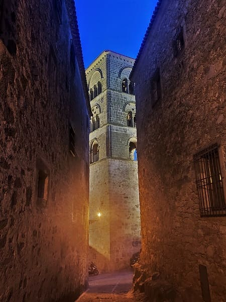
Por último visitaría
el castillo de Trujillo, es una fortaleza construida entre el siglo IX y el siglo XII de una localidad de Trujillo.
El castillo está construido con bloques de granito de sillería y tiene varias torres cuadradas defensivas alrededor, dos de las cuales con arco de herradura y una imagen de la Virgen de la Victoria, patrona de Trujillo. En el siglo XV se añadió un segundo recinto amurallado o albacara. Además posee una muralla también con almenas y puertas, de las que quedan 17 torres de forma rectangular.
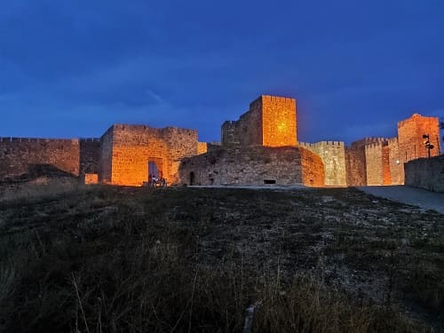
Desde arriba la vista panorámica es espectacular y de noche también envolviéndonos en otro tiempo.
Lo que se echa en falta es las visitas a los interiores de los palacios, y que la mayoría de las iglesias solo abran en horario litúrgico y no para el turismo, al menos cuando yo estuve. Estuve apenas 3 horas pero este pueblo bien merece un día entero para visitarlo. Por último iría a cenar a un conocido restaurante de la localidad.
Iglesia de santa Lucía del Trampal, s.VII-IX.
3
Plaza Mayor y palacio marqueses, s.XVI.
4
Real Monasterio de Guadalupe, s.XIV.
5
Plaza Mayor y palacetes, s.XVI.
6
Día 3, Cáceres en un día(CLICK para continuar)
3 de octubre de 2021

![[Valid RSS]](https://www.onepointsync.com/wp-content/uploads/2016/08/valid-rss-rogers.png "Validate my RSS feed")